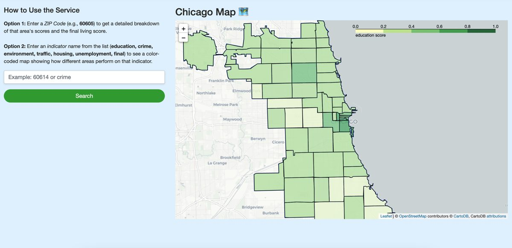

Chicago Livability Score
An interactive map that ranks 60 Chicago ZIP codes on a weighted index of housing cost, economy, crime, education and environment.
- Built the crime, school and environment indices from 257K crime records, 94K environmental complaints and 650 public schools.
- Matched point-level records to ZIP codes with spatial joins on Census shapefiles, and wrote unit tests for the pipeline.